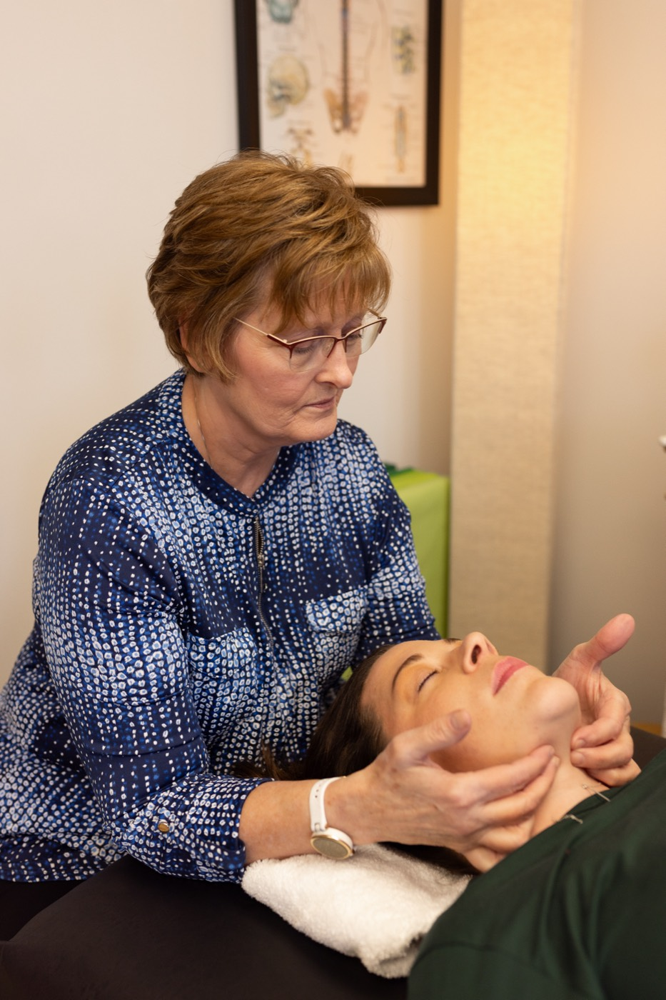

Comprehensive orofacial care
Kathleen opened Digits & Spots in 2003 to bring specialized myofunctional therapy to Kansas City families. "Digits" — thumb/finger habits. "Spots" — where your tongue tip belongs.
What is OMD?
Disorders of the muscles of the face, tongue, and lips that affect breathing, swallowing, speech, and dental development.
Learn more →Treatments
A multi-disciplinary approach combining OMT with craniosacral therapy, Buteyko breathing, and primitive reflex integration.
Explore treatments →Who We Help
Infants, children, teens, and adults — OMT is effective at every stage of life. Referrals welcome from orthodontists, ENTs, and speech therapists.
See who benefits →A more complete approach than standard OMT
Many practices offer orofacial myofunctional therapy. Few go deeper. Kathleen integrates four additional disciplines into treatment — each one addressing a root cause that muscle exercises alone can't reach.

Craniosacral Therapy
Fascial restrictions in the tongue, jaw, and cranial bones can limit how far OMT exercises go. Craniosacral work releases those restrictions — so the muscles can actually learn the new patterns.
Buteyko Breathing
Chronic mouth breathing is both a symptom and a driver of OMDs. Buteyko retrains the nervous system toward nasal breathing — addressing the habit at its neurological root, not just its oral expression.
Primitive Reflex Integration
Retained primitive reflexes — reflexes that should fade in infancy — interfere with muscle coordination, posture, and focus. Integrating them removes a hidden barrier to lasting OMT results.
Postural & Neuromuscular
The tongue, jaw, airway, and spine are connected. Postural imbalances affect oral function — and vice versa. Kathleen's training in postural restoration and myofascial release addresses the whole chain.
You might benefit from an evaluation
These are common signs of orofacial myofunctional disorders. They can appear at any age — and OMT can help at any stage of life.
If any of the above apply, call Kathleen for a complimentary phone consultation. See the full checklist →
Ready to take the first step?
Kathleen offers after-school, evening, and Saturday appointments to fit busy family schedules. Telehealth available for distance patients.